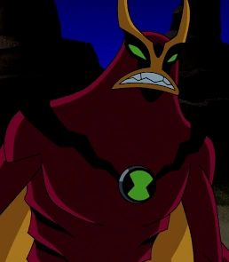
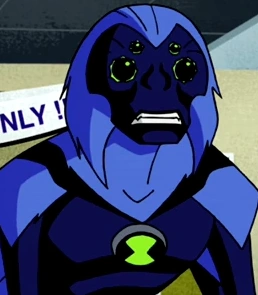
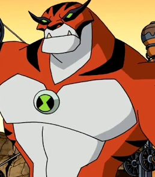
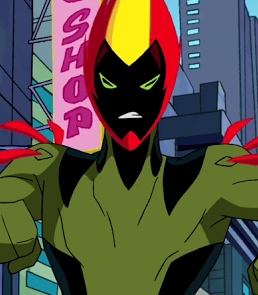
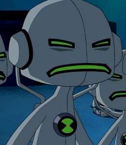
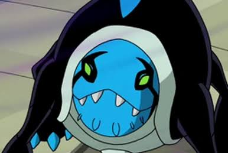
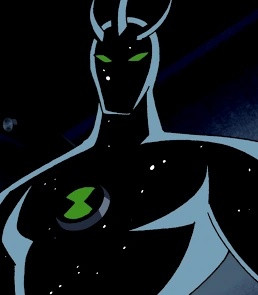
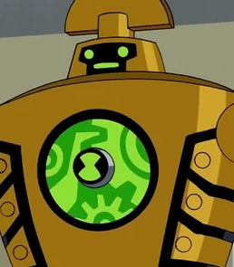
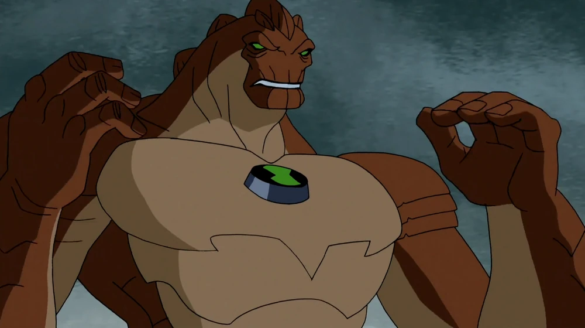
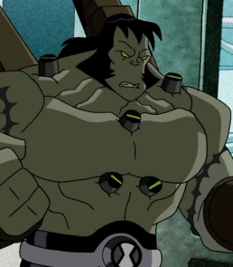

1º Arraia-à-Jato
Arraia-à-Jato lembra um Velociraptor semi-blindado. Alienígena esbelto, com braços finos que possuem três garras em cada mão, e duas garras nos pés por cima de bolas pretas que as usa quando corre, além de dar suporte as suas longas pernas.
WIKI

2º Macaco-Aranha
Macaco-Aranha tem corpo de macaco com pelo azul e possui quatro braços, possui quatro olhos que são pretos com contorno verde, sua cauda é preta com duas listras azuis, possui uma linha em forma de raio negra passa pelo símbolo do Omnitrix/Superomnitrix e da listra até sua barriga são azuis de uma tonalidade mais escura.
WIKI

3º Rath
Rath tem mais ou menos 2,75 metros de altura, e se assemelha a um tigre bípede, com uma garra saindo de cada punho, e sem cauda. Sua pele é coberta de pelos laranjas e brancos, e tem listras negras em seus ombros, cabeça, pernas e seu corpo superior.
WIKI

4º Fogo Fátuo
Fogo Fátuo possui a aparência de uma planta humanoide, com o corpo de coloração verde. Tem um rosto negro que é cercado por partes vermelhas e amarelas que deixam sua cabeça semelhante a do Chama. Seus pés são um pouco grandes, sendo semelhantes a raízes.o
WIKI

5º Eco Eco
Eco Eco é um pequeno alienígena branco feito de silício, cujo o corpo assemelha-se um amplificador vivo. Uma das características mais notáveis é um apêndice que lembra um MP3 atrás das costas com uma porta sobre ela, decorada com um símbolo de IO (10) e que se parece com fitas cassetes em suas pernas.
WIKI

6º Iguana Ártica
Iguana Ártica é uma iguana alienígena azul. Ele tem três barbatanas atingindo pelas costas e brânquias nas laterais da cabeça. Ele também tem pequenos picos ao redor de seu rosto.
WIKI

7º Alien X
Alien X é um alienígena humanoide de corpo inteiramente preto, com pequenas estrelas brancas espalhadas por ele, remetendo ao universo. Possui três saliências semelhantes a chifres na testa.
WIKI

8º Contra-Tempo
Contra-Tempo tem uma aparência de um robô. A pele de Contra-Tempo é feita de cobre, com listras pretas e um pedaço transparente de vidro verde, revelando engrenagens dentro dele.
WIKI

9º Enormossauro
Enormossauro tem um corpo grande humanoide de aproximadamente 3,60 metros, com uma pele dura e marrom. Quando ele cresce, suas características de dinossauro são mais acentuadas, como placas do dinossauro Estegossauro que crescem em suas costas, cabeça e cauda.
WIKI

10º Frankenstrike
Frankenstrike possui traços marcantes por todo o seu corpo. Seu rosto se assemelha ao de qualquer humano, a não ser pela feição agressiva, com olhos verdes sem nenhuma pupila. Seus cabelos são grandes.
WIKI